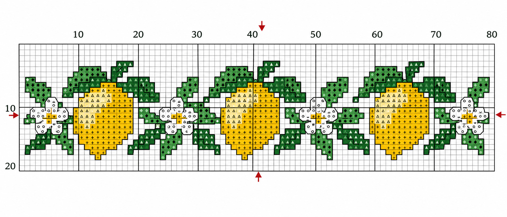

ŚWIĘTA W KRZYŻYKACH
❧ ❧ ✦ ❧ ❧
Bordiura z cytrynami
───── ❧ ─────

Legenda kolorów
| Symbol | Kolor | DMC | Nazwa | Krzyżyki |
|---|---|---|---|---|
| + | 725 | topazowy | 311 | |
| △ | 307 | cytrynowy | 58 | |
| ▲ | 3346 | myśliwski | 244 | |
| ◆ | 702 | trawiasty | 239 | |
| ○ | Blanc | biały | 143 |
Rozmiar na kanwie Aida 14: 16,0 × 4,4 cm